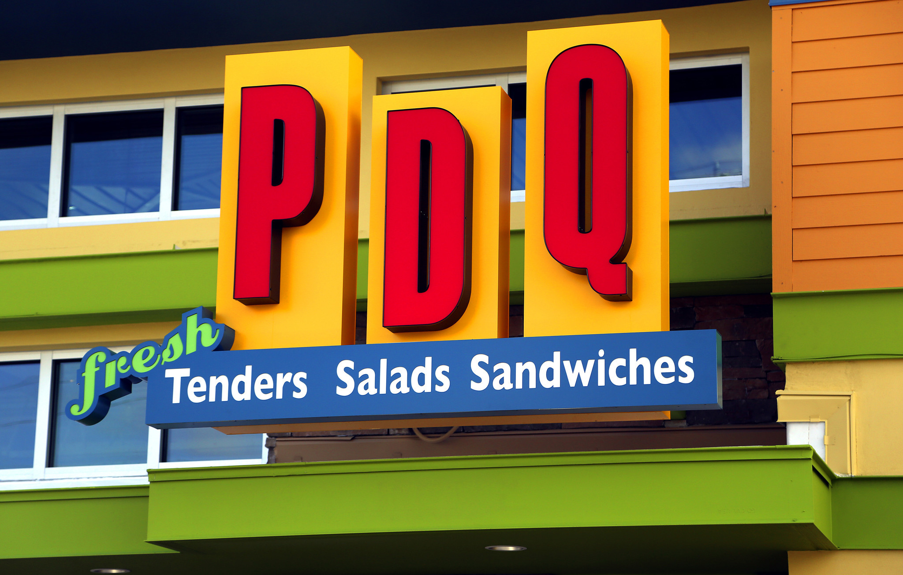

Part-time Cashier, Line Cook, and Shift Leader
Task Responsibilities:
- Created a fun and interactive environment for both staff and customers through clear and consise communcations of both parties.
- Assisted in back of house preparation of food products and line cooking manning breading, Frying, and assembly of food orders. (Shakes, Sandwiches, Salads, Sides, and etc)
- Lead employees in shift tasks, delgating responsibilities and maintaining a positive work environment.
- Responsible for Drive thru operations, Front of house operations, and communications with other employees and management.
